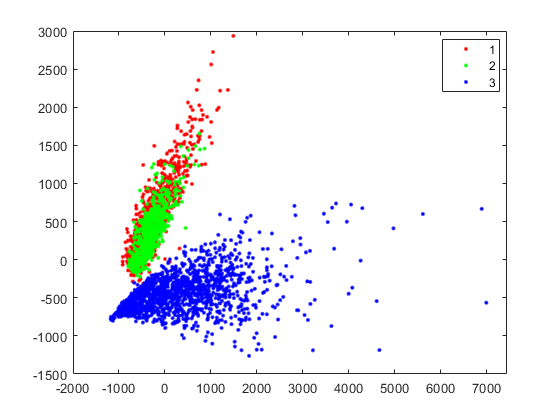
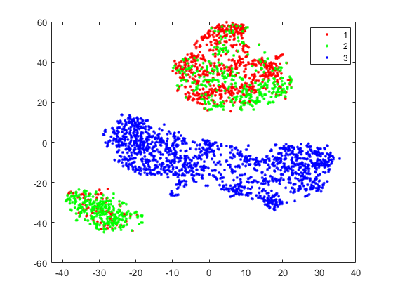
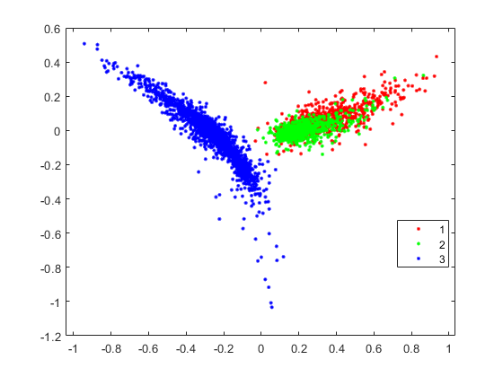
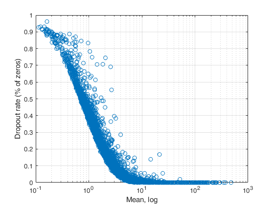
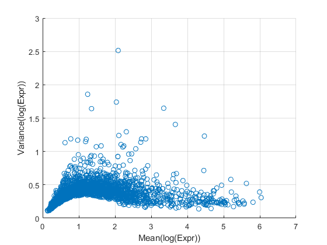

cdgea;
[X,genelistx]=sc_readfile('example_data/GSM3204304_P_P_Expr.csv');
[Y,genelisty]=sc_readfile('example_data/GSM3204305_P_N_Expr.csv');
[Z,genelistz]=sc_readfile('example_data/GSM3044891_GeneExp.UMIs.10X1.txt');
[X,genelistx]=sc_selectg(X,genelistx,3,1);
[Y,genelisty]=sc_selectg(Y,genelisty,3,1);
[Z,genelistz]=sc_selectg(Z,genelistz,3,1);
[genelist]=intersect(intersect(genelistx,genelisty,'stable'),genelistz,'stable');
i=startsWith(genelist,'MT-');
genelist(i)=[];
[~,i1]=ismember(genelist,genelistx);
[~,i2]=ismember(genelist,genelisty);
[~,i3]=ismember(genelist,genelistz);
X=X(i1,:); genelistx=genelist;
Y=Y(i2,:); genelisty=genelist;
Z=Z(i3,:); genelistz=genelist;
cellidx=[1*ones(size(X,2),1); 2*ones(size(Y,2),1); 3*ones(size(Z,2),1)];
[~,s]=pca([X Y Z]');
gscatter(s(:,1),s(:,2),cellidx,'','',8);
[s]=sc_tsne([X Y Z],2,false,true);
gscatter(s(:,1),s(:,2),cellidx,'','',8);
[s]=run.diffuse([X Y Z]);
gscatter(s(:,1),s(:,2),cellidx,'','',8);
figure;
gui.sc_scattergenes(X,genelistx,'mean_cv');
figure;
gui.sc_scattergenes(X,genelistx,'meanlg_varlg');
figure;
gui.sc_scattergenes(X,genelistx,'mean_dropr');
figure;
gui.sc_scatter3genes(X,genelistx,true,true);
T=sc_splinefit2(X,Y,genelistx,genelisty);
T=sortrows(T,size(T,2),'descend');
[~,idx1]=ismember(table2array(T(:,1)),genelistx);
[~,idx2]=ismember(table2array(T(:,1)),genelisty);
figure;
gui.sc_stem3(X(idx1,:),Y(idx2,:),genelistx(idx1),50);
Reading example_data/GSM3204304_P_P_Expr.csv ...... done.
Reading example_data/GSM3204305_P_N_Expr.csv ...... done.
Reading example_data/GSM3044891_GeneExp.UMIs.10X1.txt ...... done.
Library-size normalization...done.
Log(x+1) transformation...done.
    